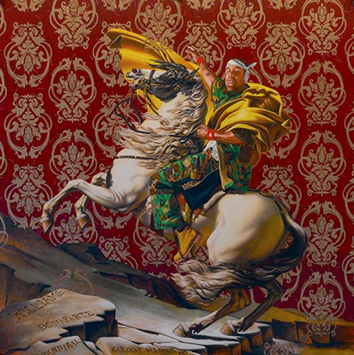
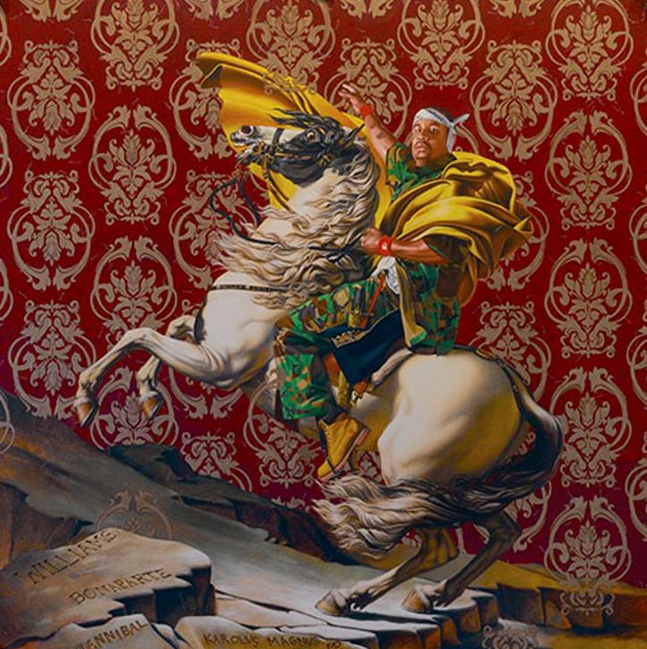

Wiley often appropriates recognizable art history images, such as portraits of Napoleon and heroic sea paintings. He does so to critique art historical norms that tend to feature limited demographics.
 
